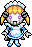
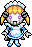
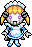
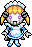

 

Este es Mi Asistente de Interfaz de Discord o MAID para abreviar. Se trata de un bot de discord que hice hace unos años para que avisara de los cumpleaños en el servidor de mis amigos.
Funcionaba bastante bien pero no quería pagar un sitio para hostearlo así que no llegamos a usarlo mucho.
Me gustaría darle otro intento a hacer un bot de discord. Recuerdo que tenía ideas muy chulas para añadirle funciones, pero ya no uso tanto discord, así que no creo que llegue a hacerlo nunca.
Tengo el código de este proyecto subido a github. Si quieres echarle un vistazo al código está todo ahí.
La saga del plano es una saga de juegos cortos interconectados que quiero hacer a lo largo de varios años.
Este es mi mayor proyecto personal. Lo que más me apetece hacer. Me motiva más que ninguna otra cosa que tenga entre manos.
Hace muchos años pensé la base y la historia para el primer videojuego, pero como no tenía mucha experiencia lo dejé para más adelante mientras conseguía práctica conn otros juegos más sencillos. Al empezar a hacer ese juego más sencillo, decidí que le aportaría mucho valor añadir secretos que hacen referencia a la historia del próximo título. Así empecé a ampliar la escala de todo el proyecto sin darme cuenta.
Es entonces cuando me vuelvo demasiado perfeccionista. Quiero que todo tenga sentido y no tener que retconear nada, así que aparqué el juego sencillo y me puse a escribirlo todo. Sé que es casi imposible atar todos los cabos, pero quiero evitar que pase tanto como pueda.
A día de hoy todavía no he sacado ningún juego de la saga del plano. He dedicado todo mi tiempo a dejar por escrito una biblia del proyecto y no me arrepiento. Creo que haciendo esto he evitado varios errores que no habrían matado mi espíritu creativo, pero me habrían escocido durante toda mi vida.
Entre bocetos, descripciones, guiones, lore e ideas sueltas, este proyecto cuenta con alrededor de 300 páginas de documentación de las que espero sacar alrededor de 5 títulos.
La saga del plano existirá y será terminada aunque me vaya la vida en ello. De verdad que tengo muchísimas ganas de que puedas jugarla algún día.
Perdoooon no quiero poner relleno pero de verdad que me hace mucha ilu tener mi propia web. Aunque no tenga backend y no pueda hacer la mitad de las cosas que me gustaría hacer. Seguramente de aquí a un tiempo monte una página en condiciones a partir de esta, pero de momento damos gracias a github pages my beloved.
La verdad es que es divertido tener la limitación de estar trabajando en local, sobre todo si quiero meter secretos en la página, pero me las apaño. Por ejemplo, mira qué clase de cifrado más chula he hecho!
También me está sirviendo mucho como distracción. Me lo paso super bien intentando implementar tonterías como el mapa o la pecera y me viene genial para no pensar en mis problemas.
Me encantaaría convencer a algunos amigos de que se hicieran páginas del estilo y tener cada uno una especie de red de blogs personalizados, pero claro, para mi es fácil decirlo porque soy desarrollador web.
Espero que te esté gustando mi página. <3
oh boy
VOLA es un juego que empecé a desarrollar en 2021 con la intención de practicar pixel art, diálogos y funciones básicas de Unity.
Es un juego muy sencillo: pedaleas y lees texto hasta que se acaba. No pretende ser super divertido o profundo, así que no lo es. Un proyecto muy fácil, ¿no?
VOLA aún no está terminado. He estado trabajando intermitentemente en él durante los últimos 5 años y está en un perpetuo estado de casi estar listo. Development hell lo llaman. Esto es un asunto completamente personal, y es que nunca estoy del todo satisfecho con el resultado. Estoy seguro de que podría haberlo sacado cuando planeaba hacerlo y que mis amigos me habrían felicitado, les hubiera gustado y habría pasado al siguiente proyecto, pero sería yo quien no estaría contento.
Le tengo mucho cariño a este juego y no quiero dejarlo de lado. Tengo planes para este juego de los que dependen mis proyectos futuros. Tal vez simplemente no es el momento de sacarlo.
Parece una tontería pero siento la necesidad de pedir perdón por tardar tanto, a nadie en particular. También quiero prometer que VOLA existirá, pero tampoco sé a quién se lo estoy prometiendo. Solo sé que no me voy a rendir.

¡Mi proyecto final de desarrollo de aplicaciones web! Estoy bastante orgulloso del resultado para el poco tiempo que tuve. Es un party game completamente funcional que usa la api de Spotify.
El funcionamiento es el siguiente: te metes en la página y haces login con tu cuenta de spotify, creas una sala o te unes a una sala mediante clave, la aplicación registra las últimas canciones gustadas de cada jugador y selecciona unas pocas. Ahora el programa va reproduciendo las canciones y cada jugador deberá, en un tiempo limitado, adivinar a cuál de sus amigos le gusta la canción que está sonando.
Sí, escomo el anime music quiz. Recuerdo que no me preocupé por el diseño visual y era fea como pegarle a un padre, pero no costaría mucho trabajo ponerla a punto y dejarla subida en algún sitio. En fin, otro proyecto a medias.
Ha aparecido una farola aquí en medio. Tiene una inscripción grabada al pie:
Hay un teléfono en el suelo.